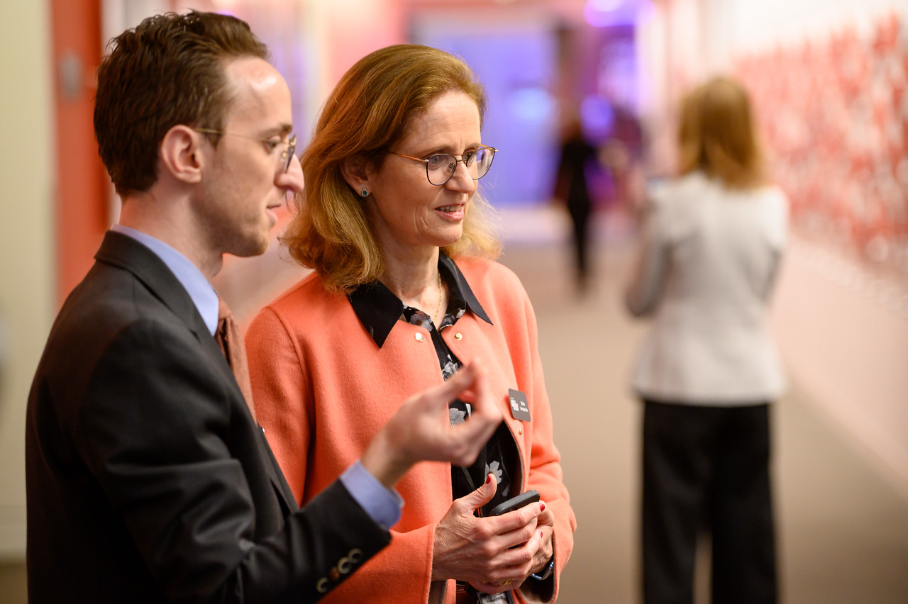
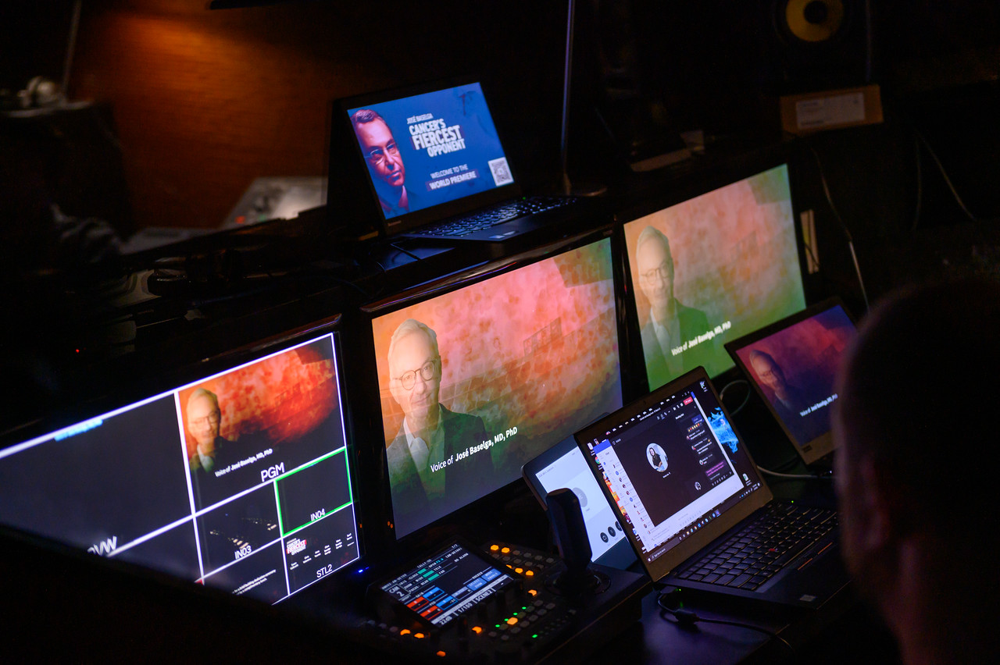
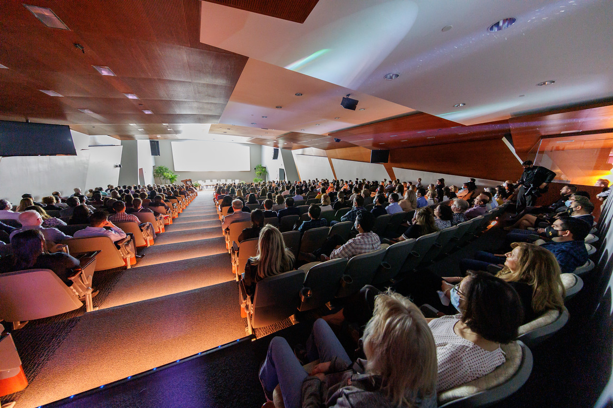
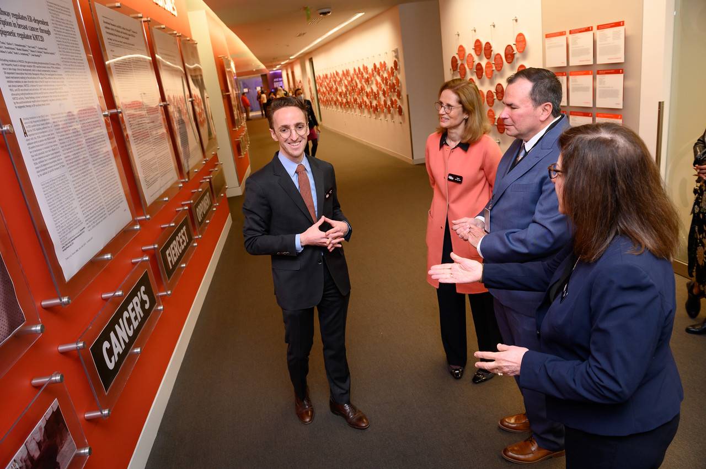
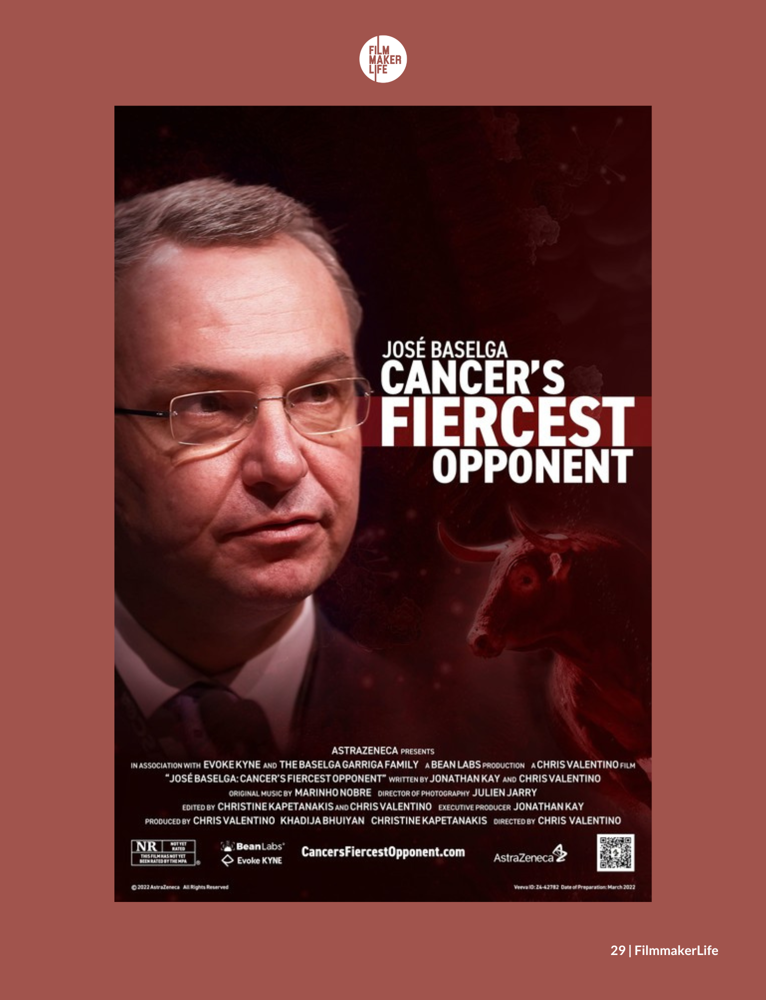

Medical science, pharmaceutical insight, and cinematic storytelling — converging in a feature documentary honoring the father of precision oncology.
In 2021, José Baselga — the pioneering oncologist widely regarded as the father of precision medicine — passed away from Creutzfeldt-Jakob disease at 61. AstraZeneca wanted to honor his legacy with a feature documentary. But the project came loaded: a grieving family, institutional politics, a medical community still processing the loss, and an unavoidable New York Times controversy.
It required someone who could navigate pharma’s institutional machinery, coordinate production across three countries, and hold a family’s grief, a corporation’s objectives, and a public controversy in a single honest narrative. Any misstep would have killed the project.



Jonathan drove the documentary from concept through global release — shaping the narrative, assembling the team, and bridging AstraZeneca’s institutional objectives with the personal story the Baselga family needed told.
The first task was earning the trust of José’s wife, Silvia, and their four children. Jonathan’s fluency in oncology and genuine respect for José’s scientific legacy created a rapport no purely commercial producer could have achieved. The family shared precious footage, personal reflections, and lesser-known stories that became the emotional backbone of the film.

Jonathan co-wrote the screenplay with director Chris Valentino, structuring the film around the defining periods of Baselga’s career: Vall d’Hebron in Barcelona, the transformative Herceptin research, leadership at Mass General, Memorial Sloan Kettering, and AstraZeneca. The film addresses the New York Times controversy head-on — with nuance only someone who understood both the science and the stakes could bring.
Jonathan assembled a team that matched the subject’s caliber: director Chris Valentino, Emmy and Grammy-winning editor Christine Kapetanakis, cinematographer Julien Jarry, and composer Marinho Nobre. On-screen contributors ranged from leading oncologists and AstraZeneca executives to Jorie Graham, the Pulitzer Prize-winning poet and former patient of José’s.
“Working with Jonathan was one of those rare experiences where you feel both supported and challenged in the right ways. He cares about the details, but more importantly, he cares about the people and the story. From day one, he was fully invested in making sure the emotional core never got lost.”
Not a single-skill project. It required a producer who could move between medical science, film production, and corporate communications — and hold all three in tension throughout.
Deep understanding of oncology, precision medicine, and clinical trial methodology — enabling authentic dialogue with world-leading researchers and ensuring the film’s scientific accuracy.
Intimate knowledge of how pharma R&D operates, from bench to bedside — critical for navigating AstraZeneca’s institutional needs and the regulatory and reputational context.
Co-wrote a screenplay weaving four decades of milestones, a public controversy, family grief, and scientific triumph into a cohesive one-hour arc.
Assembled and coordinated a multi-country production spanning Barcelona, Boston, and New York — managing budgets, timelines, and interview logistics across continents.
Earned a grieving family’s trust, satisfied a global pharma company’s objectives, and created space for vulnerable interviews with some of the world’s most accomplished scientists.
Drove the documentary from corporate premiere to film festival circuit to medical congress screenings — ensuring it served as both legacy tribute and science communication.
On March 7, 2022, the documentary premiered in AstraZeneca’s newly renamed José Baselga Building in Gaithersburg, Maryland. From there it reached the Boston and Spain International Film Festivals, a PR Week nomination, and medical congresses worldwide.
Honoring José Baselga’s legacy — The Atlantic · IMDb


Featured in FilmmakerLife Magazine
“And my question to you is, who’s going to be next? What are you going to do to move the field forward? Because, we are in an urgent need to make sure that all this knowledge continues to be developed and applied to patients.”